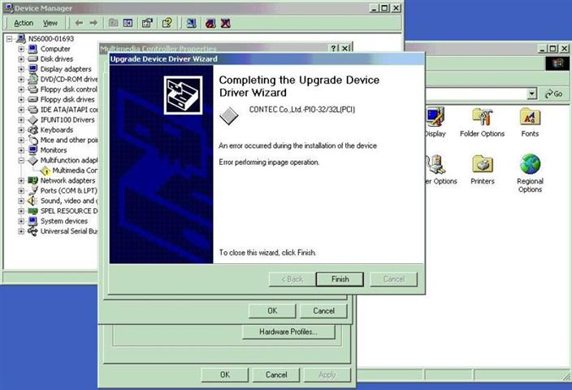

Service History
Subject: During CPU upgrade unable to install Contect I/O Board
Handler Model: NS-6040 (S/N: 01878) Mfg: Nov 2000
Controller: SRC520 (S/N: 15633)
Date: 1~12 Feb 2010
Symptom
While doing the recovery for SCS NS-6040 CPU Upgrading I faced a problem when installing the CONTEC Driver.
It given me a error message " Error performing inpage operation". Please refer to the attachment.

I'm using Recovery CD ver 3.0 for SPI-6941.
As for the CONTEC Driver i'm using the driver from MMI ver C7.14-SSY CD under Win2K.
Action
Advise to check IO address of CONTEC driver and SPEL hardware setting.
3~5 Feb 2010
Reinstalled the recovery CD ver 3.0 with was given by Hidaka san. Problem still persisted. Swapped the PCI slot for PCIO board but still unable to install contec driver.
Installed recovery CD ver3.0 and 2.1a11 on new 3.5" HDD but problem still same.
Get contec IO card from another handler to try out but still same.
Swapped the PCI slot and finally the problem solved of unable to install Contec I/O board driver.
Trying to install MMI ver C7.14-SSY on ver 3.0 and 2.1a11 HDD but unable to.
Hidaka san check with Japan and suspect recovery CD problem.
8 Feb 2010
Suzuki san check on the MMI software, I/O address, the user I/O, MIB boards and changing of CDROM cable. MMI software able to installed after changing of CDROM cable. Previous MMI and SPEL version removed and installed SCS MMI and SPEL version. SPEL system file restored and I/O check on the control panel, tower light and buzzer carried out from the I/O module unit for buzzer faulty.
10~11 Feb 2010
Restored the POSE data. Dry run the handler to confirm upgrading success and taking of UPH carried out. Buzzer always ON whenever ON button was depressed at the control panel. I/O module, remote I/O card, tower light and buzzer changed but problem still persist. Diode on the SKP-387-A found short. Refer NS-6000 Wiring diagram Drawing No. "Operation Panel 1"; Drawing No. "SKH0665-E01".
SKP-387-A(In Power Unit) swapped from other handler but problem persist. Try isolate every single I/O modules and finally found unload 1 I/O module faulty. Unload 1(ULD 1) I/O module replaced and problem solved.
Cause
1) Faulty PCI slot on backplane board in SRC520 caused Contec I/O board driver unable to be installed
2) Faulty CD-ROM IDE cable caused MMI unable to be installed.
3) Diode on SKP-387-A shorted and faulty ULD 1 I/O module caused Buzzer always ON when Power ON button is depressed on Operation Panel
SKP-387-A is a board in PSUNT, refer wiring sheet no. SKH0665-B07.
Remarks
Old type Backplane
specification: MBP-PC114R (R35N600000100)
another old type Backplane is SRC520CE is MBP-PCI13L
New type Backplane
Spec:PCI-14S-RS-R30
Lastest Backplane is MB-PCI14/9(PC) which is also use in NS-7000.